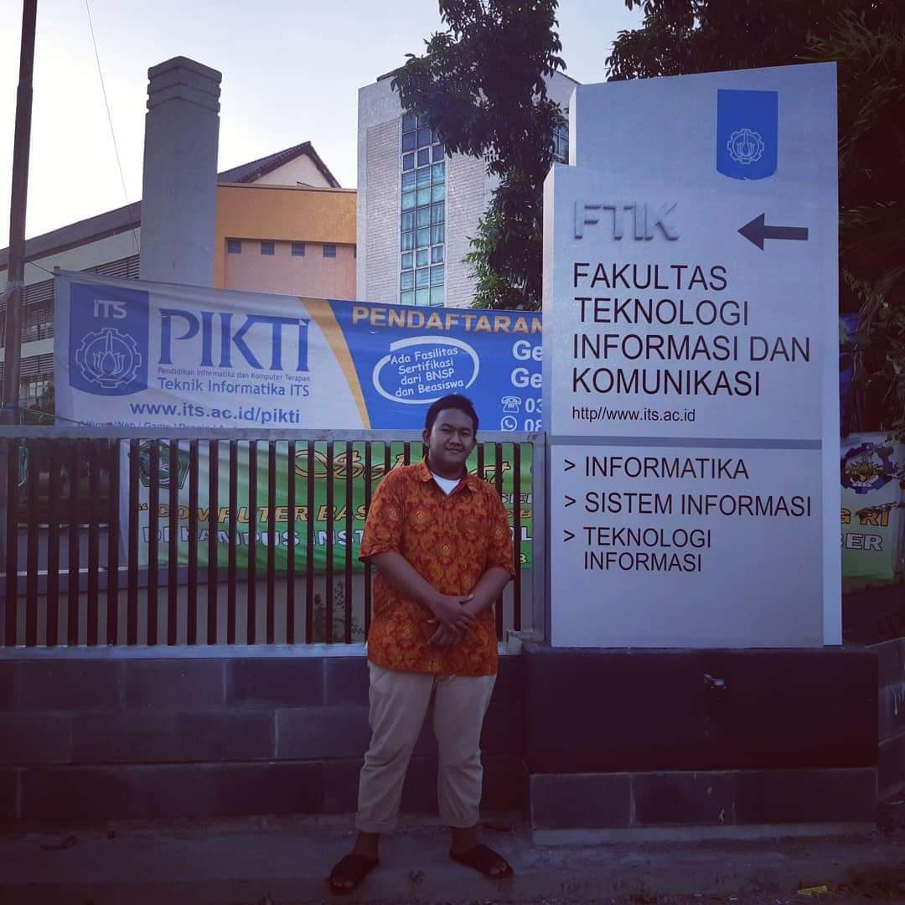
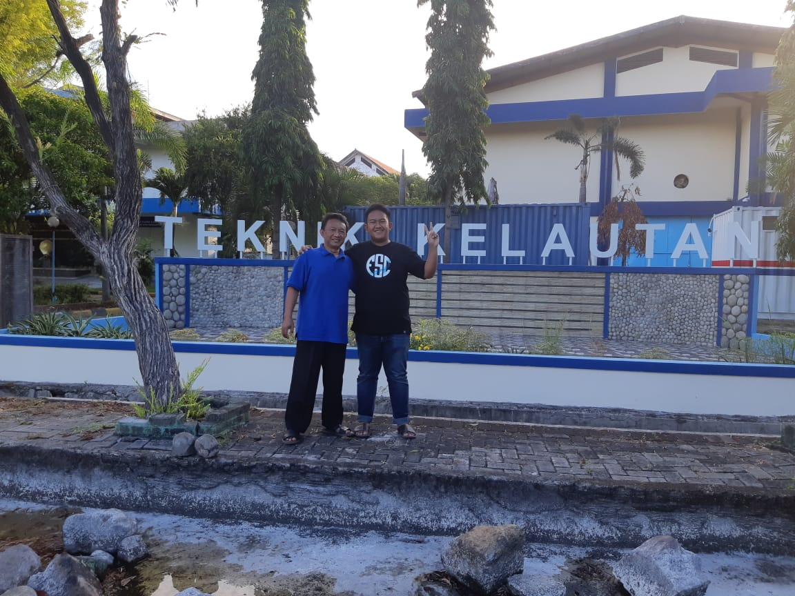

Tentang saya

Hii, aku Ananta :)
kenalin nihh, namaku Ananta Rizki Widyadana, aku berasal dari Bekasi, Jawa Barat. Saat ini aku sedang menempuh pendidikan di Sistem Informasi ITS.
Link Tugas PWEB:
Sosial Media
Masuk ITS
ditulis 25/10/2020
setelah daftar ulang, 2019.
Setahun setelah saya mengunjungi ITS, Alhamdulillah ternyata saya rejekinya juga di ITS hehe, tepatnya di jurusan Sistem Informasi FTIK(saat itu masih FTIK) ITS. Foto diatas diambil setelah saya menyelesaikan daftar ulang masuk ITS.
Pertama kali ke ITS
ditulis 25/10/2020
bersama ayah di depan Teknik Kelautan FTK ITS, 2018.
Pada saat itu saya sedang duduk di kelas 12 SMA dan setelah lulus berencana untuk melanjutkan pendidikan ke jenjang perkuliahan. Pada saat mudik tahun 2018 ke Jawa Timur, saya diajak orang tua saya untuk mengunjungi kampus dimana mereka belajar untuk mendapatkan gelar sarjananya yaitu Institut Teknologi Sepuluh Nopember (ITS). yap, ayah dan ibu saya merupakan alumni ITS yang lulus sekitar 25-30 tahun yang lalu, ayah saya merupakan alumnus FTK ITS dan ibu saya alumnus FTI ITS. Tujuan saya diajak untuk mengunjungi kampus menurut mereka adalah supaya saya tau lingkungan kampus itu seperti apa dan ada bayangan untuk kedepannya.